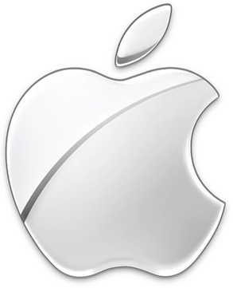

Apple
- Hardware-software integrated company
- “A computer for the rest of us."
- Focuses on the quality of their product and not its accessibility
- Had invisions for Macs to be at every home but it was too expensive
- Does not have an variety of products, focus on certain products
- In 1997, Apple had around 15 products, when Steve Jobs returned he discontinued many and only focused on four products.
- Apple's (the Mac, specifically) envision is to become the new "digital hub for our emerging digital lifestyle"

Microsoft
- Software company which then produced hardwares
- Had big dreams in software
- “A computer to every home”
- More accecible (cheaper)
- IBM ask bill gates for a operating system Bill made one based on 86-DOS platform named it PC-DOS owned the copyright
-
Microsoft is built on MS-DOS
What if...

Steve Jobs had failed
- Macintosh may be an independent company
- If he weren't called back to Apple in 1997, Apple would cease to exist as they were going bankrupt
Bill Gates had failed
- IBM would have not been able to come out with their PC since they needed a operating system
- No DOS
- No Microsoft products